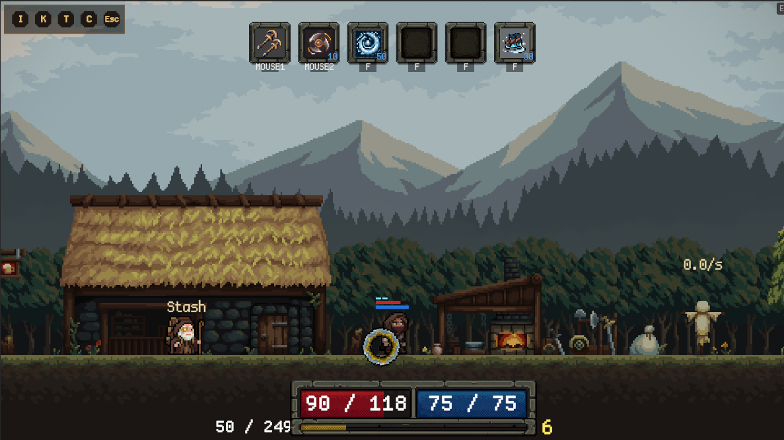
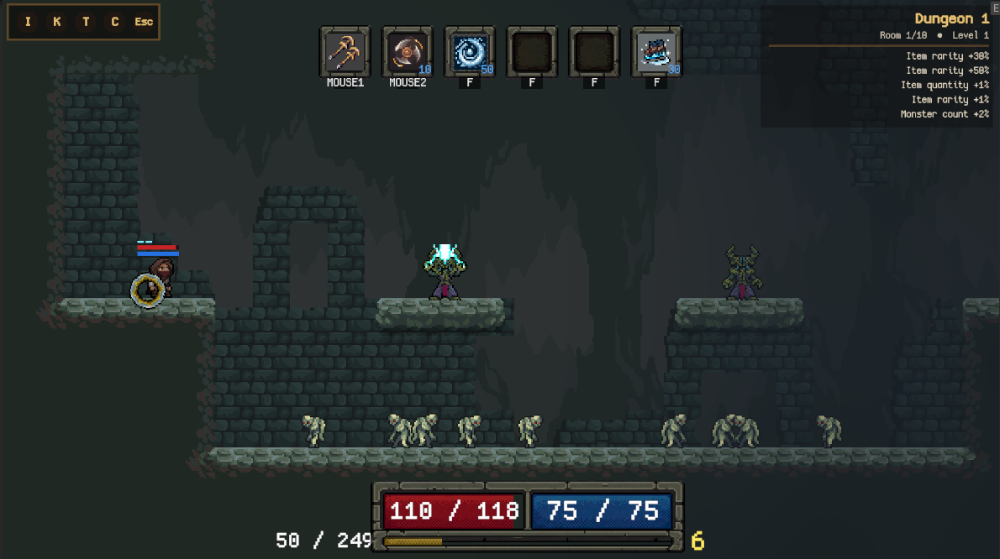

Рекомендую начать здесь
Прохладный мир, тёплые обжитые места
Холодные планы леса и пещер. Тёплые окна, огонь и сервисы. Герой связан с окружением тенями и источниками света.
План улучшения глубины и атмосферы: что изменить, какой результат ждать и сколько постоянной работы это добавит.
Сначала — разделение планов, контакт и общая палитра. Затем — мотивированный свет и жизнь окружения. Оценки являются дизайнерским прогнозом; кадры ниже — исходные скриншоты, без обработки и без имитации будущего результата.


Это варианты художественного направления. Цветовые полосы обозначают идею палитры, не готовые профили или обработанные скриншоты.
Холодные планы леса и пещер. Тёплые окна, огонь и сервисы. Герой связан с окружением тенями и источниками света.
Приглушённые цвета, редкие акценты и много расстояния между силуэтами. Главный риск — потерять врагов в темноте.
Ясные цветовые массы, более заметные локальные акценты. Нужна дисциплина цвета, чтобы бой не стал пёстрым.
Кнопки только отмечают пункты для сравнения. Они ничего не меняют в Unity. Эффекты и сроки нельзя складывать механически: часть работы общая.
Атмосфера, тень под ногами, пыль движения, анимированный туман хаба, движение листвы и код параллакса. Их стоит развивать и настраивать.
Основная графика хаба использует unlit-путь; настоящий 2D-свет потребует проверки материалов. В сохранённой сцене выбран AtmosphereBasic с большим радиусом раскрытия вокруг игрока. Поля mist/lantern/motes в профиле пока не подтверждены рабочей runtime-привязкой.
Эффект: 5 — сильнее меняет восприятие. Внедрение и поддержка: 1 — легче, 5 — тяжелее. Срок — грубая оценка прототипа одного вида хаба и одной комнаты, без массового производства нового арта.